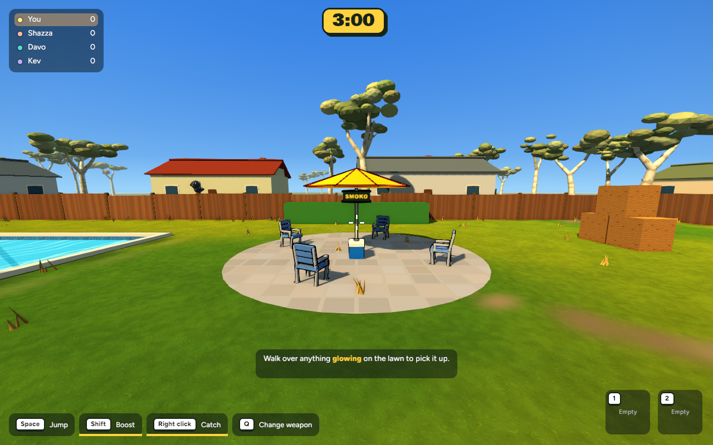
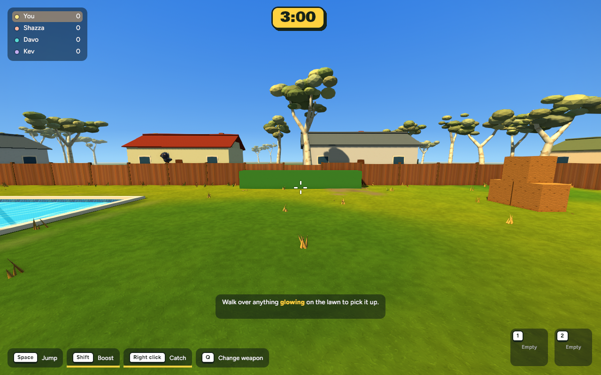
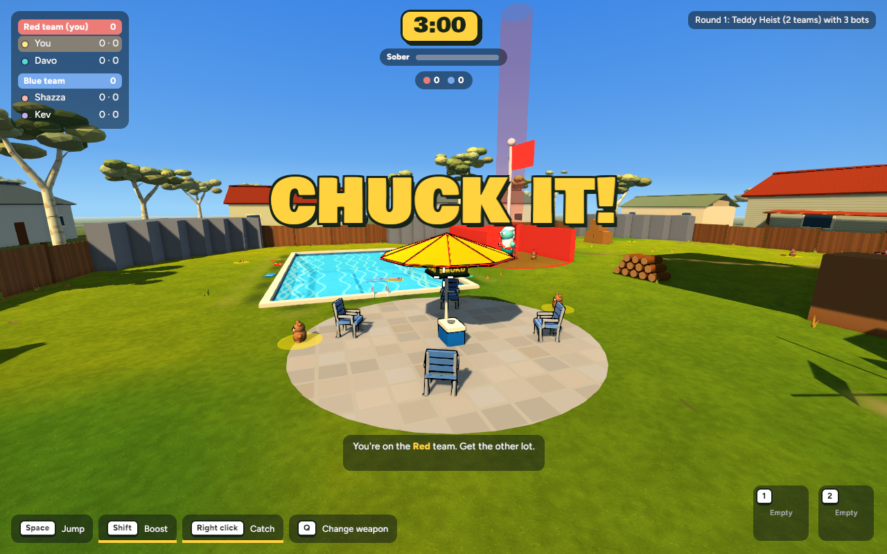
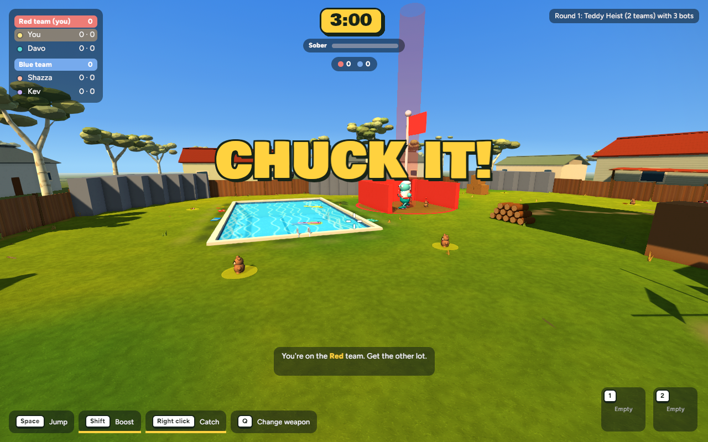

15 October 2026 · Actual game captures from matching cameras and settings.
Smoko’s pad, chairs, umbrella, esky and signs are removed from the current maps. Smoko settings, hotkeys, interaction hints and Naughty Corner delivery scoring are unavailable in standard play and Heist. Reusable systems are preserved for the separate mode.
The former seating pad becomes open lawn beside the hedge. The worn approach now leads to the woodpile.


The pool-side pad is removed, opening space beside the pool. Heist bases, teddies and scoring remain.


598 tests passed (185 app, 413 core); one existing test ignored. Checks cover inactive Smoko zones, bots, saved-settings boundaries and network snapshots, alongside existing combat, carrying/throwing and Heist scoring tests.
Release build passed. Actual before/after views inspected: both Smoko areas are gone and the lawn is continuous. No capture errors.
| Scene | Mean frame interval | FPS | Mesh entities |
|---|---|---|---|
| Standard | 7.759 → 7.810 ms | 128.88 → 128.04 | 5825 → 5602 |
| Heist | 8.098 → 8.234 ms | 123.49 → 121.45 | 6250 → 6028 |
| Stress | 8.708 → 8.732 ms | 114.84 → 114.52 | 7389 → 7167 |
No meaningful performance regression in these samples (mean interval changes under 2%). Same Mac, 1280 × 800, 300 warmup frames and 600 measured frames, uncapped presentation. Small differences are normal run-to-run variation; these are wall-clock intervals, not GPU timestamps. Human multiplayer playtesting remains outstanding.
The separate Smoko map and carry-to-score objective are the next milestone, pending your review. Nothing has been committed or pushed.